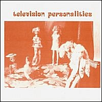

Television Personalities |
 1989 - Caff - Caff 5 - 7" Songs: I Still Believe In Magic (Dan Treacy) Respectable (Mel & Kim) Recorded and mixed in Jowe's kitchen (note genuine frying pan effects at beginning of side one), late summer 1989. "I Still Believe In Magic" was recorded in early '86 for an Andy Kershaw sesh in a freezing Stockport studio when Dan had a streaming cold. The Caff version which you are now holding was recorded on a splendidly lo-fi portastudio but makes up for the recording qual by being ten times more atmos. Some would call it poetry. "Respectable" is a tribute to SAW, bless 'em. But now it's time for a very beautiful poem by Richard Brautigan so I will leave you. Bye for now, [Bob]. I live in the Twentieth century and you lie here beside me. You were unhappy when you fell asleep. There was nothing I could do about it. I felt helpless. Your face is so beautiful that I cannot stop to describe it, and there's nothing I can do to make you happy while you sleep. |